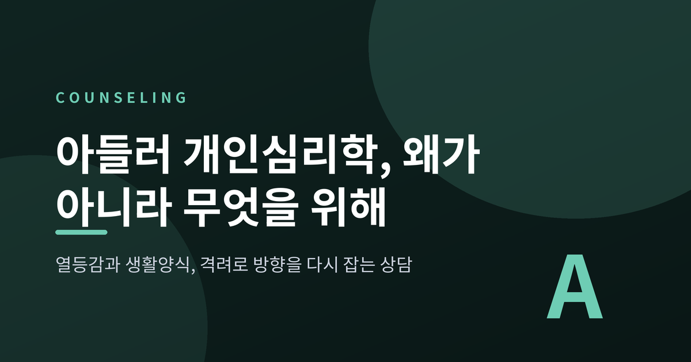
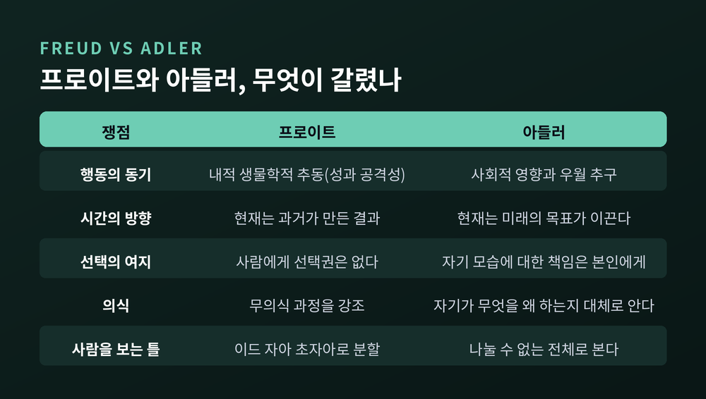
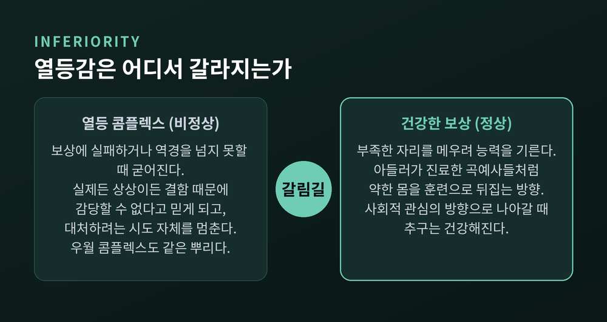
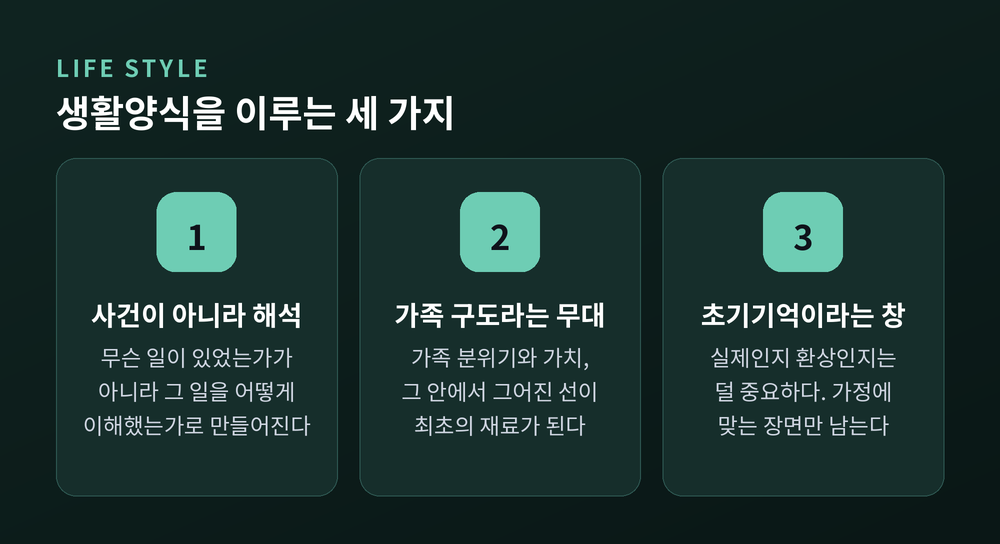
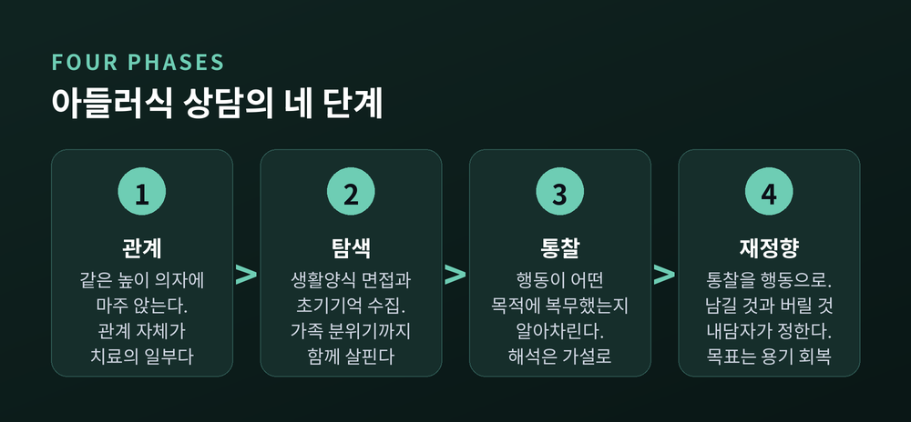
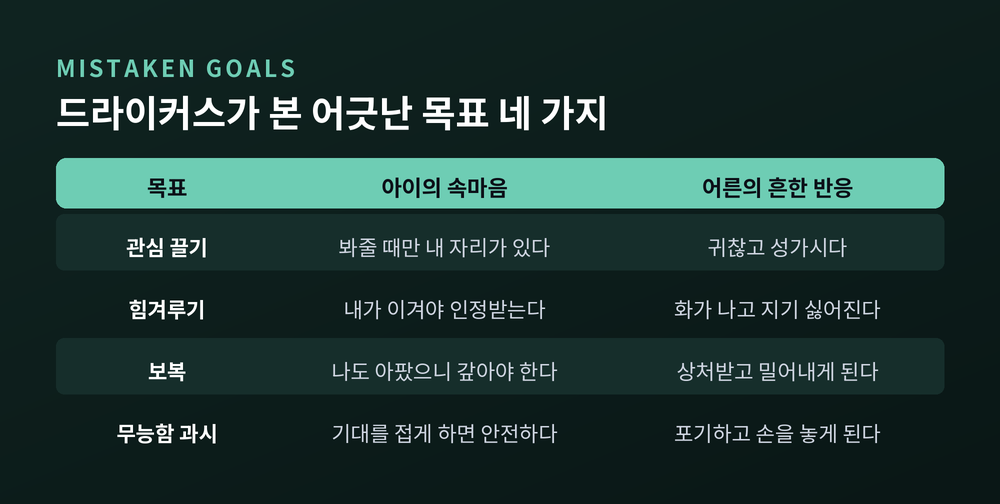
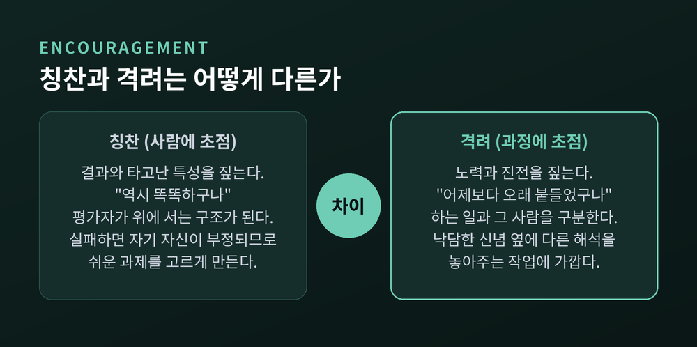

열등감과 생활양식, 격려로 방향을 다시 잡는 네 단계의 상담

이번 글에서는 아들러의 개인심리학을 정리해 보겠습니다. 열등감과 생활양식이라는 두 축, 그리고 상담자가 실제로 어떤 질문을 던지는지를 다룹니다. 이론이 학교와 부모교육으로 내려간 자리와, 근거 기반 관점에서 남은 한계까지 함께 짚겠습니다.
먼저 분명히 해두겠습니다. 이 글은 자가진단이나 자가치료를 위한 안내가 아닙니다. 여기 나오는 사례는 모두 설명을 위해 만든 가상의 상황입니다.
알프레드 아들러는 1870년 빈 외곽에서 태어났습니다. 어린 시절 구루병을 앓았고, 다섯 살 무렵 폐렴으로 사경을 헤맸습니다. 동생이 옆 침대에서 세상을 떠나는 것도 보았습니다. 의사가 되겠다는 결심은 그때 세워졌습니다.
1902년 프로이트가 그를 주례 토론 모임에 불렀습니다. 그 모임이 1908년 빈 정신분석학회가 되었고, 1910년 아들러는 초대 회장 자리에 앉았습니다.
그러나 그는 처음부터 순순한 제자가 아니었습니다. 유아 성욕보다 기관 열등성과 공격성, 그리고 사회적 환경을 강조했습니다. 1911년 긴장된 회의들 끝에 그는 리비도 이론을 명시적으로 격하했고, 프로이트는 아들러의 모임에 속하는 것은 학회 회원 자격과 양립할 수 없다고 선언했습니다.
아들러는 회장직을 내려놓고 지지자들과 함께 떠났습니다. 정신분석 운동의 첫 번째 대분열이었습니다. 융의 이탈보다 2년 빨랐습니다.
새로 만든 학회의 이름이 개인심리학회였습니다. 여기서 '개인'은 개인주의가 아닙니다. 라틴어 individuum, 곧 나눌 수 없다는 뜻입니다. 이드와 자아와 초자아로 사람을 쪼갠 모델에 맞서, 나눌 수 없는 한 사람 전체를 내세운 이름입니다.

1차 세계대전에서 군의관으로 복무한 경험이 그를 한 번 더 바꿔놓았습니다. 정신건강은 사회적 감정에 달려 있다는 확신이 그때 굳어졌습니다. 1920년대에 그는 빈의 공립학교에 아동생활지도클리닉을 붙였습니다. 그 시대 최초의 공공 클리닉 중 하나였습니다.
아들러 이론에서 열등감은 누구에게나 있습니다. 결함의 징후가 아닙니다.
출발점은 유아기의 무력함입니다. 부모와 주변 사람들이 나보다 나이가 많고 능숙하고 유능하다는 사실, 그 자체가 부족감을 만듭니다. 아동기에는 세 가지 원천에서 이 감각이 두드러집니다. 신체적 약점, 과보호, 그리고 방임입니다.
여기서 갈림길이 생깁니다.
건강한 쪽은 보상입니다. 부족한 자리를 메우려고 능력을 기르는 방향입니다. 아들러가 처음 진료한 환자 중에는 빈 프라터 유원지 근처의 곡예사들이 있었습니다. 약한 몸을 훈련으로 뒤집은 사람들이었습니다. 보상 개념의 살아있는 표본이었던 셈입니다.
다른 쪽은 과잉보상입니다. 한 영역의 무능을 다른 영역에서 두각을 내 가리는 방식입니다. 겉으로는 성취처럼 보이지만, 원래의 열등감을 더 키우기 쉽습니다.
열등감과 열등 콤플렉스는 구분해야 합니다. 열등감은 정상이고, 열등 콤플렉스는 그렇지 않습니다. 콤플렉스는 보상에 실패하거나 삶의 역경을 넘어서지 못할 때 굳어집니다. 실제든 상상이든 어떤 결함 때문에 이 부분은 도저히 감당할 수 없다고 믿게 되고, 대처하려는 시도 자체를 멈추게 됩니다.
우월 콤플렉스는 그 반대편이 아니라 같은 뿌리입니다. 자기 능력을 과대평가해 남보다 유능하다는 인상을 내보이는 태도인데, 아들러는 이것을 문제를 직면하는 대신 회피하려는 시도로 보았습니다. 거짓된 힘은 언제나 그 밑의 열등감을 감춥니다.

그래서 아들러의 기준은 성취의 크기가 아닙니다. 그는 이렇게 정리했습니다. 타인에게 이롭지 않은 추구는 무익하고, 사회적 관심의 방향으로 나아갈 때 건강하다고 말입니다.
아들러가 말하는 성격의 이름은 생활양식입니다. 삶의 어려움을 다루는 자기만의 신념과 목적과 원칙으로 짜인, 일종의 개인적 서사입니다.
대략 여섯 살 무렵에 틀이 잡힙니다.
중요한 것은 이 대목입니다. 생활양식은 일어난 사건으로 만들어지지 않습니다. 그 사건을 내가 어떻게 이해했는가로 만들어집니다. 자기개념, 자기이상, 세계관, 윤리적 확신이 모두 여기에 들어갑니다.
이 틀이 처음 빚어지는 무대가 가족 구도입니다. 가족 분위기, 가족이 중요하게 여기는 가치, 그 안에서 그어진 선들이 재료가 됩니다.

아들러는 사람을 수동적 결과물로 보지 않았습니다. 사회적으로 배태된 맥락 안에서 극작가이자 배우로서 자기 성격을 써 내려간다고 보았습니다.
생활양식을 읽는 도구 중 하나가 초기기억입니다. 상담자는 아주 어린 시절의 장면을 하나 떠올려 달라고 청합니다.
여기에 아들러다운 관점이 있습니다. 그 기억이 실제 사건인지 환상인지는 크게 중요하지 않다는 것입니다. 우리는 자기 자신과 세계에 대한 근본 가정에 들어맞는 기억을 골라 간직합니다. 그러니 성인의 삶은 실제로 일어난 일이 아니라 일어났다고 지각한 것을 중심으로 돕니다.
가상의 예를 들어보겠습니다. 어떤 분이 이런 장면을 떠올립니다. "여섯 살쯤이었습니다. 놀이터에서 넘어졌는데 아무도 오지 않았습니다. 혼자 일어나서 옷을 털었습니다."
상담자는 이 기억을 사실 확인의 대상으로 다루지 않습니다. 대신 이렇게 묻습니다. 그 장면에서 세상은 어떤 곳으로 보였는지, 그 안의 나는 무엇을 할 수 있는 사람이었는지를 말입니다.
아들러 상담의 성격을 한 문장으로 줄이면 이렇습니다. 해석의 강조점은 행동의 원인이 아니라 목적을 찾는 데 있습니다.
프로이트는 현재를 과거로 설명했습니다. 아들러는 현재를 미래로 설명합니다. 사람은 자기가 세운 목표를 향해 움직이며, 그 목표를 자각하든 못 하든 행동은 여전히 목적적이라는 관점입니다.
이 목표를 지탱하는 것이 사적 논리입니다. 자기 생활양식을 정당화하기 위해 스스로 지어낸 추론입니다. 사람은 누구나 자기가 그린 세계상이 정확한 것처럼 살아갑니다.
질문이 어떻게 달라지는지 보시면 이해가 빠릅니다.
가상의 대화입니다. 회의 때마다 말을 아끼고 나중에 후회한다는 분이 오셨습니다.
원인을 묻는 질문은 이렇게 갑니다. "언제부터 그러셨습니까. 어릴 때 무슨 일이 있었습니까."
목적을 묻는 질문은 방향이 다릅니다. "그 자리에서 말을 아끼면, 무엇을 지킬 수 있습니까."
두 번째 질문에 이런 답이 나올 수 있습니다. "틀린 말을 해서 우습게 보이는 일은 없습니다."
여기서 침묵의 목적이 드러납니다. 무능해서 못 하는 것이 아니라, 평가받을 위험을 피하기 위해 하지 않는 쪽을 택한 것입니다. 원인 탐색은 과거로 향하지만, 목적 탐색은 곧바로 선택의 자리로 돌아옵니다.
아들러가 남긴 문장 하나가 이 태도를 압축합니다. "우리는 경험에 의해 결정되지 않고, 경험에 부여한 의미로 스스로를 결정한다."
독일어 Gemeinschaftsgefühl은 흔히 사회적 관심 또는 공동체 감정으로 옮깁니다. 두 번역이 함께 있어야 뜻이 온전해집니다. 자기 이익과 욕구를 넘어 공동의 것을 귀하게 여기는 삶의 방향 감각이기 때문입니다.
아들러는 이것을 정신건강의 1차 척도로 삼았습니다. 그의 표현은 단호합니다. 미발달한 사회적 관심이 심리적 부적응의 밑바닥에 있는 단 하나의 요인이라는 것입니다.
이 관심이 실제로 발휘되는 자리를 그는 세 가지 인생 과제로 정리했습니다. 일, 사회, 사랑입니다. 후대 이론가들은 자기, 영성, 양육과 가족을 덧붙였습니다.
일 과제는 돈벌이만을 뜻하지 않습니다. 아들러는 우리 삶이 타인의 노동으로 가능해진다고 보았습니다. 그래서 의미 있고 기여하는 일인가를 함께 봅니다. 사회 과제는 타인과, 그리고 자기 자신과 만족스러운 관계를 맺는 법을 배우는 일입니다. 소속되지 못할 때 인지 기능이 떨어지고 스트레스 지표가 오른다는 보고가 뒤따릅니다.
한 가지는 조심스럽게 말씀드리겠습니다. 국내에서 널리 알려진 '과제 분리'는 대중서를 통해 확산된 재해석에 가깝습니다. 아들러의 1차 개념 체계에서 독립된 항목으로 확인되지는 않습니다. 유용한 정리이되, 아들러 본인의 용어로 단정하기는 어렵습니다.
아들러식 상담은 네 단계를 밟습니다. 관계, 탐색, 통찰, 재정향입니다.

첫째, 관계. 상담자와 내담자가 같은 높이의 의자에 마주 앉습니다. 형식처럼 보이지만 의도가 담긴 배치입니다. 낙담한 사람에게 이 관계는 오랜만에 맺는 첫 협력적 관계일 수 있습니다. 그래서 관계 자체가 이미 치료의 일부로 간주됩니다.
둘째, 탐색. 생활양식 면접이 이뤄집니다. 가족 안에서 자기가 어느 자리에 있다고 느꼈는지, 가족 분위기는 어땠는지, 학교 경험과 사회적 발달은 어땠는지를 묻습니다. 아들러는 살던 동네와 형편까지 물었습니다. 자기 자신과 가족이 더 큰 세상에서 어디쯤 있다고 여겼는지를 알기 위해서였습니다. 그리고 마지막에 초기기억을 모읍니다.
셋째, 통찰. 자기 행동이 어떤 목적에 복무해왔는지, 그것을 지탱한 잘못된 신념이 무엇인지를 내담자가 알아차리는 단계입니다. 해석은 단정형으로 오지 않습니다. "혹시 이런 것일 수도 있을까요"라는 가설의 형태로 조심스럽게 놓입니다.
넷째, 재정향. 통찰을 행동으로 옮깁니다. 어떤 행동을 남기고 어떤 행동을 버릴지 내담자가 결정합니다. 목표는 삶의 과제를 마주할 용기의 회복입니다.
기법 몇 가지는 이름만 들어도 익숙하실 것입니다.
'그 질문'은 이렇게 던집니다. "이 문제가 더 이상 없다면, 당신의 삶은 어떻게 달라져 있을까요." 해결중심치료가 이 방법을 기적 질문이라는 이름으로 다시 가져갔습니다. '~인 것처럼 행동하기'는 장애물이 없다고 가정하고 한 주만 그렇게 지내보게 하는 과제입니다. '자기 포착'은 자기패배적인 생각이 시작되는 순간을 죄책감 없이 잡아채는 훈련입니다.
과제 설정도 있습니다. 아들러는 우울한 내담자에게 매일 즐거운 일을 하나씩 하는 일정을 주었고, 사회적 관심을 키우려고 지역사회 봉사를 제안했습니다. 오늘날 행동활성화라 부르는 접근의 원형입니다.
아들러 상담의 가장 유명한 명제는 여기 있습니다. 내담자는 병든 것이 아니라 낙담해 있는 경우가 많다.
그래서 핵심 개입은 격려입니다. 격려는 듣기 좋은 말을 얹는 일이 아닙니다. 노력과 진전에 초점을 두고, 하는 일과 그 사람 자신을 구분해 주고, 낙담시키는 신념 옆에 다른 해석을 놓아주는 작업입니다.
용기에 대한 정의도 담백합니다. 두려울 때에도 사회적 관심에 맞는 방식으로 행동하려는 의지입니다. 두려움과 용기는 함께 갑니다. 두려움이 없다면 용기라는 말도 필요 없을 것입니다.
이 관점이 교실로 내려간 것이 루돌프 드라이커스의 작업입니다. 그는 아이의 문제행동 뒤에 네 가지 어긋난 목표가 있다고 보았습니다.

이름이 '어긋난' 목표인 이유가 중요합니다. 아이가 원하는 것은 소속감인데, 선택한 방법이 오히려 자기를 소외시키기 때문입니다.
그래서 대응도 달라집니다. 처벌 대신 자연적 결과와 논리적 결과를 씁니다. 어른이 먼저 반응 방식을 바꾸고, 아이가 자기 동기를 알아차리도록 돕고, 문제행동에 기대지 않고도 관심과 소속의 욕구를 채울 통로를 만들어 줍니다.
아들러가 본 좋은 양육의 요소도 같은 결입니다. 상호 존중, 있는 그대로의 아이에 대한 신뢰, 자연적·논리적 결과, 그리고 자유와 한계를 함께 세우는 일입니다.
그가 경계한 두 가지 양육이 있습니다. 과보호와 방임입니다. 정반대처럼 보이지만 도착점이 같을 수 있다는 것이 아들러의 지적입니다. 둘 다 아이에게 부족감을 남깁니다.
드라이커스는 이 아동생활지도 모델을 미국으로 옮겼고, 그것이 큰 부모교육 운동의 토대가 되었습니다. 대표적인 프로그램이 STEP입니다.

칭찬과 격려의 구분은 다른 연구 계열에서도 비슷한 결론에 닿았습니다. 캐럴 드웩 진영의 '과정 칭찬 대 사람 칭찬' 연구입니다. 과정 칭찬은 노력과 전략을 인정하고, 사람 칭찬은 타고난 특성을 짚습니다. 다섯에서 여섯 살 아동은 사람 칭찬이나 사람 비판을 받은 뒤에 무력한 반응을 유의하게 더 많이 보였습니다. 노력을 칭찬받은 아이들의 90퍼센트가 더 어려운 과제를 골랐다는 실험도 널리 알려져 있습니다.
다만 이것은 아들러 이론을 직접 검증한 연구가 아닙니다. 다른 길에서 출발해 비슷한 자리에 도착한 별개의 연구로 보시는 편이 정확합니다.
여기서 균형을 잡아야 합니다. 좋은 이론이라는 말과 잘 검증된 치료라는 말은 다르기 때문입니다.
지지하는 쪽부터 보겠습니다.
아들러 놀이치료는 무작위 통제 연구를 통과했습니다. 교실에서 방해 행동을 보이는 초등학생 58명을 대상으로 한 2014년 연구에서, 배정을 모르는 교사와 평정자가 실험군의 행동 문제가 유의하게 줄었다고 보고했습니다. 효과 크기는 중간에서 큰 수준이었고, 교사가 느끼는 관계 스트레스도 함께 낮아졌습니다. 아들러 집단상담이 임신 중 디스트레스와 자기돌봄을 개선했다는 무작위 통제 연구도 있습니다.
2016년에는 신경과학 관점에서 개인심리학을 검토한 논문이 나왔습니다. 사회적 배태성, 행동의 목적성, 전체론이라는 핵심 원리에 대해 지지 근거를 확인했다고 정리했습니다.
이제 아쉬운 쪽입니다.
첫째, 출생순위 이론은 대규모 연구에서 대체로 기각되었습니다. 2015년 미국·영국·독일 세 나라의 국가 패널 자료를 합쳐 2만 명이 넘는 표본을 분석한 연구가 있습니다. 출생순위가 늦어질수록 지능이 조금 낮아지는 효과는 확인되었습니다. 한 단계마다 IQ 약 1.5점, 표준편차의 10퍼센트 정도입니다. 그러나 외향성, 정서적 안정성, 우호성, 성실성, 상상력에서는 출생순위 효과가 일관되게 나타나지 않았습니다. 검정력이 충분한 연구였습니다. 아들러 진영의 문헌조차 출생순위 연구 결과가 엇갈린다는 점을 인정합니다.
둘째, 문헌의 양 자체가 얇습니다. 2024년에 나온 체계적 문헌고찰은 두 데이터베이스에서 10년치를 훑어 200편 가까이 모았지만, 기준을 적용한 뒤 최종 분석에 남은 것은 14편이었습니다. 성인 개인상담에 대한 대규모 메타분석은 확인되지 않습니다. 근거가 놀이치료와 집단 프로그램 쪽에 몰려 있습니다.
셋째, 평가 도구의 한계입니다. 초기기억은 성격 특성 채점에서는 쓸 만한 신뢰도를 보였지만, 이것으로 정신병리를 진단하려 한 임상가들은 우연 수준을 넘는 정확도를 얻지 못했습니다.
넷째, 이론에 대한 고전적 비판도 남아 있습니다. 프로이트는 아들러가 마음의 복잡성을 권력을 향한 단일 추동으로 압축했다고 보았습니다. 융은 타당하지만 일면적이라고 평가했습니다. 강제된 고립이나 말기 질환처럼 사회적 기여를 말하기 어려운 상황에서는 이 틀이 줄 것이 적다는 지적도 있습니다.
아들러 자신도 한계를 알고 있었습니다. 통찰만으로는 치료가 성공하지 못한다고 그는 분명히 말했습니다.
그럼에도 그의 흔적은 넓게 남았습니다. 엘리스와 벡은 아들러를 인지행동치료의 선구자로 인정했습니다. 매슬로는 직접 영향을 받았습니다. 해결중심치료의 기적 질문과 행동활성화의 과제 설정도 그 자리에서 갈라져 나왔습니다. '열등 콤플렉스'와 '생활양식'이라는 그의 조어는 아예 일상어가 되었습니다.
예전에는 아들러가 프로이트에게 밀린 사람으로 읽혔습니다. 지금은 여러 현대 치료법이 그의 이름을 각주에 달고 있습니다. 정작 그가 덜 유명한 이유로는, 문장이 지나치게 평이해서 극적인 매력이 없었다는 점이 꼽히기도 합니다.
정리하면 이렇습니다.
아들러는 사람을 원인의 결과물로 보지 않았습니다. 목적을 향해 움직이는 존재로 보았습니다. 그래서 그의 상담은 무엇이 당신을 이렇게 만들었느냐고 묻지 않고, 이 행동으로 당신이 무엇을 지키려 하느냐고 묻습니다.
같은 이유로 그는 진단명 대신 낙담이라는 단어를 썼고, 처방 대신 격려를 놓았습니다.
"사람은 낙담해 있을 뿐, 망가진 것이 아닙니다."
다만 이 글은 이해를 돕기 위한 정리이지 자가진단의 도구가 아닙니다. 열등감이나 관계의 어려움이 일상을 좁히고 있다면, 혼자 해석을 밀고 나가기보다 정신건강의학과 전문의나 훈련받은 상담 전문가와 상의하시길 권합니다. 생활양식은 혼자 들여다보기 어렵고, 밖에서 함께 보는 눈이 있을 때 훨씬 선명해집니다.
지금의 나를 바꿀 수 있겠냐고 물으신다면, 과거를 바꿀 수는 없어도 그 의미는 다시 쓸 수 있다고 답하겠습니다.